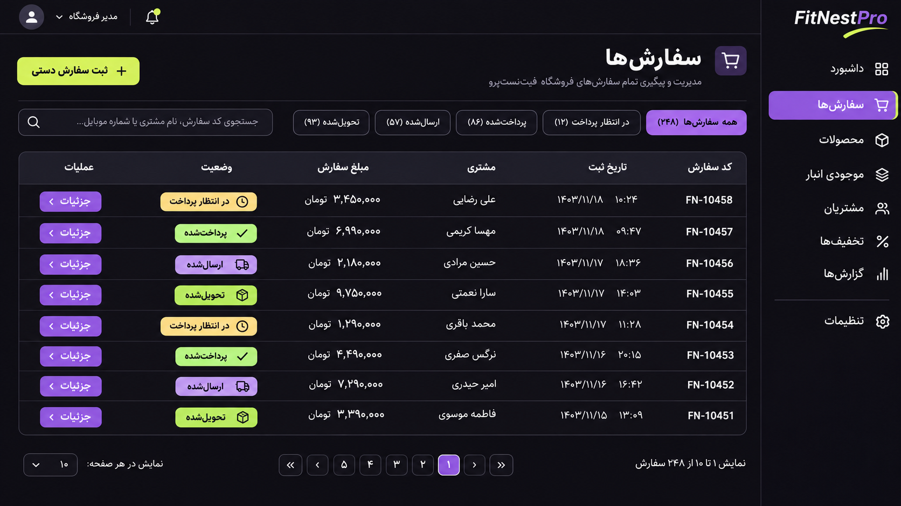
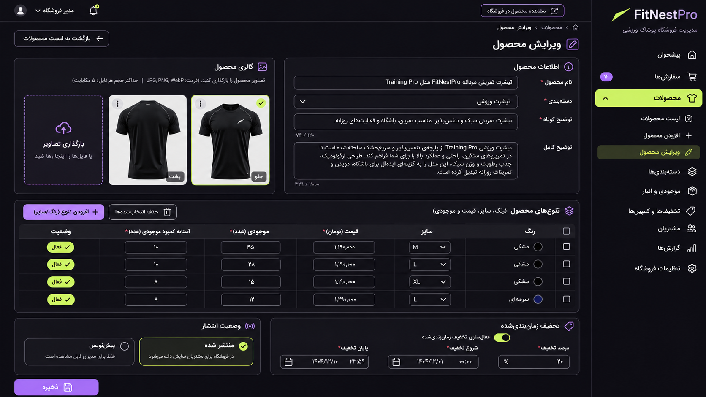

طرحهای مفهومی پنل فیتنست پرو
شش تصویر هماهنگ با ابزار تولید تصویر ساخته شدهاند. دادههای روی تصویر صرفاً نمونهاند. رابط واقعی از فایلهای HTML و API ساخته میشود.
شرح و مشخصات مجموعهٔ پرامپتهافهرست سفارشها

ویرایش محصول و گالری
